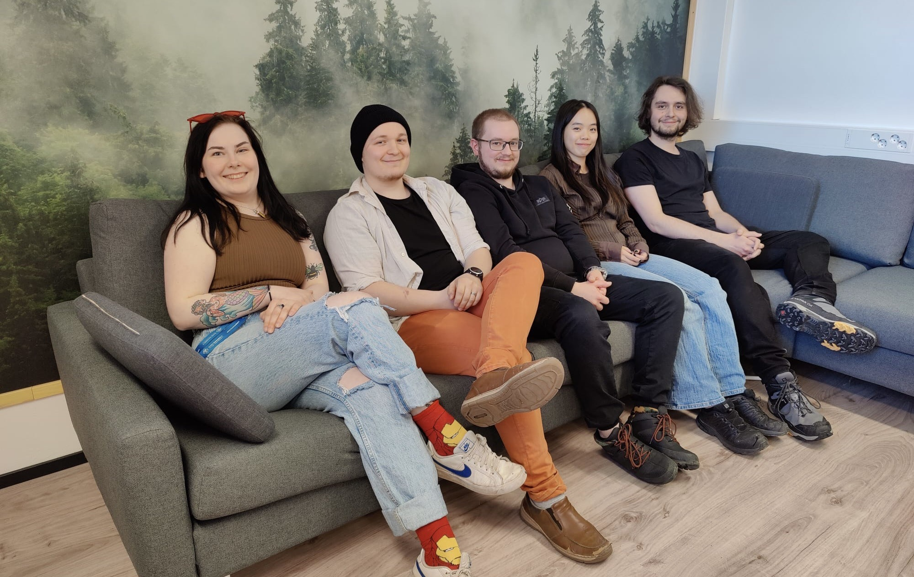

We were inspired by the UN Goals for Sustainable Development, emphasizing the 11th goal: Sustainable cities and communities. Berry picking is a simple yet effective way to promote and support sustainable development. By engaging in this activity, people are encouraged to appreciate the natural environment and its resources while simultaneously supporting local economies. One of the key benefits of berry picking is that it promotes biodiversity. When people gather berries, they are effectively helping to maintain and even enhance natural habitats for a variety of wildlife species. This in turn promotes a healthy and sustainable ecosystem. In addition, berry picking supports sustainable agriculture. By purchasing and consuming locally sourced berries, consumers are reducing their carbon footprint and supporting local farmers. This helps to strengthen local economies and reduce the environmental impact of transportation and distribution. Furthermore, berry picking encourages sustainable practices by promoting the use of natural and organic farming techniques. Overall, it is an excellent way to promote and support sustainable development. It encourages people to appreciate nature, support local economies, engage in sustainable practices and obviously, it’s delicious!